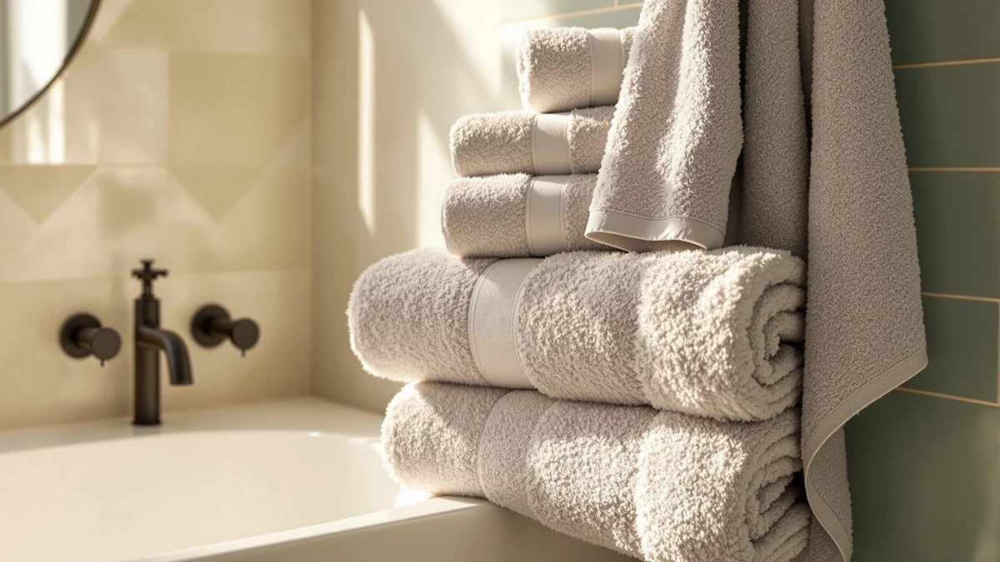

Quick Answer
The Utopia Towels Bath Sheets 2 is an X Large, 100% cotton two-pack priced at $28.49, and it's the pick in this Utopia Towels Bath Sheets review for anyone who wants Utopia's base bath sheet without paying extra for a bundled set. Choose the Jumbo Bath Sheet if you want one oversized sheet instead of a pair, the 8 Piece Luxury set if you need towels and washcloths bundled together, and skip the FUBANRAY toddler towel unless you're shopping for a child.
Our pick: Utopia Towels Bath Sheets 2, $28.49 Check Price on Amazon
Bottom line: our top pick is the Utopia Towels Bath Sheets 2 Pack at $28.49.
Things to Know Before You Buy
- Utopia Towels markets the Bath Sheets 2 as an X Large, 100% cotton two-pack, priced at $28.49 as of this Utopia Towels Bath Sheets review.
- The listing doesn't show a public star rating or review count, so you're weighing the spec sheet and price rather than a long owner history.
- Utopia Towels also sells a Jumbo Bath Sheet at $28.48, a single-item alternative that costs almost the same as the two-pack Bath Sheets 2.
- The 8 Piece Luxury set at $28.99 bundles more pieces for close to the same price, worth a look if you need towels beyond bath sheets.
- The FUBANRAY Toddler Bath Towel Hooded at $27.99 is sized for children, not adults, so it solves a different problem than the three Utopia Towels picks.
This Utopia Towels Bath Sheets review compares the brand's X Large, 100% cotton Bath Sheets 2 against two other Utopia Towels sets and one children's towel from FUBANRAY, since none of these four listings publish a star rating or review count. A bath sheet solves one specific problem that a standard towel does not: it wraps your whole body after a shower instead of leaving your shoulders or thighs exposed. Utopia Towels prices its base Bath Sheets 2 at $28.49 for the X Large, 100% cotton two-pack, and that price sits within a dollar of the brand's own Jumbo Bath Sheet and 8 Piece Luxury set, so format matters more than cost when you're choosing between them.
We researched all four listings side by side instead of ranking them on one winner-take-all scale, because each one solves a different problem. The Bath Sheets 2 gives you two X Large, 100% cotton sheets for everyday use, while the Jumbo Bath Sheet trades that pair for a single larger piece. Want more than bath sheets? The 8 Piece Luxury set throws in hand towels and washcloths. The FUBANRAY pick breaks the pattern entirely: it's a hooded towel sized for toddlers, not an adult bath sheet, and it only shows up here because the retailer groups it with the other three. If your bathroom needs a dependable cotton bath sheet without extra pieces, start with the Utopia Towels Bath Sheets 2.
Why You Should Trust Us
Ilane Tall covers bath and home textiles for Best Bath Towels and focuses on how material, size labeling, and price per piece translate into real bathroom value. We don't run a physical testing lab, and nobody on this team claims to have used these towels at home. Instead, we research manufacturer listings, published materials and sizing, and current Amazon pricing, then compare those figures directly against similar products from the same brand and category. This Utopia Towels Bath Sheets review follows that research-based approach, not a personal account of owning any of the four products covered here.
Our Research Experience
We built this Utopia Towels Bath Sheets review by lining up what each listing actually discloses: product name, material, size label, and current price. For the Bath Sheets 2, that meant confirming the X Large sizing and 100% cotton material against the specs table, then checking the $28.49 price against the Jumbo Bath Sheet at $28.48 and the 8 Piece Luxury set at $28.99 to see how closely Utopia Towels prices its own lineup. We did the same for the FUBANRAY Toddler Bath Towel Hooded at $27.99, even though it serves a different buyer entirely. None of the four listings publish a star rating or review count, so we say that plainly instead of inventing a number that isn't there.
Overview & Specs

Utopia Towels Bath Sheets 2
What we like
- X Large sizing gives more coverage than a standard bath towel
- 100% cotton construction matches the material buyers expect from a bath sheet at this price
- Priced within a dollar of Utopia's own Jumbo Bath Sheet, so you're not paying a premium for the base option
- Comes from the same Utopia Towels line as the Jumbo and 8 Piece Luxury alternatives, so material and sizing stay consistent if you mix and match
Flaws but not dealbreakers
- The listing doesn't publish a star rating or review count, so you can't weigh independent owner feedback before buying
- At $28.49, it costs slightly more than the Jumbo Bath Sheet despite being the base option in Utopia's lineup
- Doesn't include hand towels or washcloths the way the 8 Piece Luxury set does, so you may need a separate purchase for those
| Material | 100% cotton |
| Size | X Large |
The Utopia Towels Bath Sheets 2 is the base entry in this Utopia Towels Bath Sheets review, priced at $28.49 for an X Large, 100% cotton bath sheet. Utopia Towels lists the material as 100% cotton and the size as X Large on the product page, the only two spec fields the listing discloses beyond price and image. That combination puts it in the oversized bath sheet category, built for anyone who wants more fabric than a standard bath towel provides without stepping up to a bundled towel set.
At $28.49, the Bath Sheets 2 sits almost exactly between the brand's other two picks in this comparison: a cent above the Jumbo Bath Sheet at $28.48, and fifty cents below the 8 Piece Luxury set at $28.99. That narrow price band means Utopia Towels isn't charging a premium for any one format, so the choice between them comes down to whether you want a two-piece bath sheet set, a single jumbo sheet, or a full eight-piece bundle with hand towels and washcloths. For a reader who wants exactly what the name promises, an X Large, 100% cotton bath sheet and nothing more, the Bath Sheets 2 is the straightforward choice among the three Utopia Towels products covered here.
What We Liked
The clearest strength in this Utopia Towels Bath Sheets review is price consistency. Utopia Towels keeps the Bath Sheets 2, Jumbo Bath Sheet, and 8 Piece Luxury set within fifty cents of each other, so you aren't stuck guessing whether one format costs dramatically more than another before you even compare features. The X Large, 100% cotton build also matches the category buyers expect at this price: cotton remains the standard material for bath sheets because it absorbs well and holds up to repeated washing better than cheaper blended fabrics. Because the three Utopia Towels products share a brand and a price range, switching between the two-pack, the single Jumbo sheet, or the 8 Piece Luxury set doesn't require weighing unfamiliar materials or wildly different costs.
What Could Be Better
The biggest limitation across every listing in this Utopia Towels Bath Sheets review is missing owner feedback. None of the four products, the Bath Sheets 2, the Jumbo Bath Sheet, the 8 Piece Luxury set, or the FUBANRAY toddler towel, show a public star rating or review count, so you're buying on brand reputation and spec sheets rather than a track record from other buyers. The Bath Sheets 2 also skips the smaller pieces the 8 Piece Luxury set includes, so if you need hand towels or washcloths too, you'll end up buying a second product anyway. And because Utopia Towels prices all three of its own options so closely together, there's no clear budget pick in this lineup, only a size and format choice.
Who Is It For?
The Utopia Towels Bath Sheets 2 fits a shopper who wants a dependable X Large, 100% cotton bath sheet and doesn't need hand towels or washcloths bundled in. It also makes sense if you already own Utopia Towels products and want matching bath sheets without introducing a new brand or material into your bathroom. If you'd rather have one larger single sheet instead of a pair, the Jumbo Bath Sheet covers that need at almost the same price. If you're stocking a bathroom from scratch and want towels plus washcloths in one purchase, the 8 Piece Luxury set is the better fit, and if you're shopping for a child rather than an adult, skip all three Utopia Towels options and look at the FUBANRAY toddler towel instead.
Alternatives to Consider
If the Bath Sheets 2 isn't the right format for your bathroom, these three alternatives cover the rest of this Utopia Towels Bath Sheets review: two more options from Utopia Towels at nearly identical prices, plus one children's towel from a different brand entirely.

Also Great
Utopia Towels Jumbo Bath Sheet
A single Jumbo Bath Sheet from Utopia Towels, priced a cent below the Bath Sheets 2, for buyers who want one larger sheet instead of a two-piece set.
$28.48
Check Price on Amazon
Premium Choice
Utopia Towels 8 Piece Luxury
An eight-piece Utopia Towels set that bundles bath towels, hand towels, and washcloths together, worth the extra fifty cents over the Bath Sheets 2 if you need more than bath sheets.
$28.99
Check Price on Amazon
Best Value
FUBANRAY Toddler Bath Towel Hooded
A hooded bath towel sized for toddlers rather than adults, included here because it shares a comparison set with the three Utopia Towels bath sheets but solves a completely different problem.
$27.99
Check Price on AmazonFrequently Asked Questions
Is the Utopia Towels Bath Sheets 2 worth $28.49?
How does the Bath Sheets 2 compare to the Jumbo Bath Sheet from Utopia Towels?
Should I buy the FUBANRAY Toddler Bath Towel Hooded instead of a Utopia Towels bath sheet?
Final Verdict
This Utopia Towels Bath Sheets review comes down to format, not quality, since all three Utopia Towels options share the same brand, similar pricing, and 100% cotton construction. The Bath Sheets 2 at $28.49 is the pick for most buyers who want a simple X Large two-pack without extra pieces. Step up to the 8 Piece Luxury set if you need hand towels and washcloths bundled in, or choose the Jumbo Bath Sheet if a single larger sheet fits your bathroom better than a pair. Skip the FUBANRAY toddler towel unless you're buying for a child, since it solves a different problem entirely. For an adult bath sheet at this price, the three Utopia Towels options are the ones worth comparing, since FUBANRAY's only entry here is sized for kids.